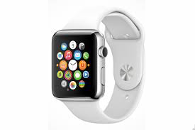

它比以往更為快速、更加強大，但身形卻更顯纖薄、輕巧。
它擁有歷來最亮麗、最多彩的 Mac 筆記型電腦顯示器。它推
出 Touch Bar，這是鑲嵌於鍵盤上，可支援 Multi-Touch 的長
形玻璃面板，讓你快速取用你需要的各種工具。
全新 MacBook Pro，以我們突破性的創意構想打造，現在，
它已經準備好，等著助你實現你的每個創意。

iPad Pro 並非只是新一代 iPad，更是我們對當代個人電腦運算領域，
堅信不疑的願景。它擁有超越多數筆記型電腦的強大威力，卻讓你以
指尖運用自如；即使再複雜的工作，都可以輕觸、滑動或動筆書寫等
自然的方式進行。不論你選擇 12.9 吋或全新的 9.7 吋機型，iPad Pro
比歷來出現過的都更有能力、更多才多藝、更方便攜帶。簡而言之，
就是超強。

Apple Watch Series 2 內建 GPS、防水 50 公尺1，
並配備快如閃電的全新雙核心處理器，而且顯示器
更亮兩倍，更勝以往。再加上滿載的功能，讓你保
持活力、充滿動力，更能和親友緊密聯繫，這一切
都是專為你的各種活動方式而設計。
只須將它們拿出，就可以與你所有的裝置配合使用。
戴上它們放入耳中，就能立刻連接。對著它們講話，
你的聲音聽起來清晰透澈。AirPods 全新登場，簡約
與科技，前所未有地完美融合，結果，絕對令人驚歎。